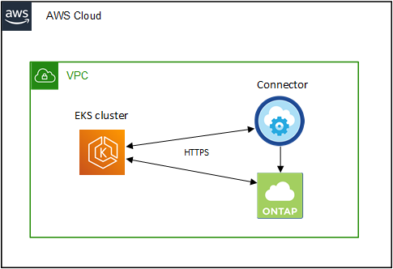

시작하십시오
시작하십시오
AWS의 Kubernetes 클러스터 요구사항
 변경 제안
변경 제안
AWS에서 관리되는 EKS(Amazon Elastic Kubernetes Service) 클러스터 또는 자체 관리되는 Kubernetes 클러스터를 BlueXP에 추가할 수 있습니다. 클러스터를 BlueXP에 추가하려면 다음 요구 사항을 충족해야 합니다.

|
이 항목에서는 EKS 및 자체 관리 Kubernetes 클러스터에 대한 구성이 동일한 _Kubernetes 클러스터를 사용합니다. 클러스터 유형은 구성이 다른 곳에서 지정됩니다. |
요구 사항
- 아스트라 트리덴트
-
Astra Trident의 최신 버전 4개 중 하나가 필요합니다. BlueXP에서 Astra Trident를 직접 설치하거나 업그레이드할 수 있습니다. 당신은 해야 한다 "사전 요구 사항을 검토합니다" Astra Trident를 설치하기 전
- Cloud Volumes ONTAP
-
Cloud Volumes ONTAP for AWS는 클러스터를 위한 백엔드 스토리지로 설정해야 합니다. "구성 단계를 보려면 Astra Trident 문서로 이동합니다".
- BlueXP 커넥터
-
필요한 권한이 있는 Connector가 AWS에서 실행되고 있어야 합니다. 아래에서 자세히 알아보십시오.
- 네트워크 연결
-
Kubernetes 클러스터와 Connector 간, Kubernetes 클러스터와 Cloud Volumes ONTAP 사이에 네트워크 연결이 필요합니다. 아래에서 자세히 알아보십시오.
- RBAC 인증
-
BlueXP Connector 역할은 각 Kubernetes 클러스터에서 인증되어야 합니다. 아래에서 자세히 알아보십시오.
커넥터를 준비합니다
Kubernetes 클러스터를 검색하고 관리하려면 AWS에 BlueXP Connector가 필요합니다. 새 Connector를 만들거나 필요한 권한이 있는 기존 Connector를 사용해야 합니다.
새 커넥터를 작성합니다
아래 링크 중 하나에 있는 단계를 따르십시오.
기존 Connector에 필요한 권한을 추가합니다
3.9.13 릴리스부터 _NEWED_DEPLOY 커넥터에는 Kubernetes 클러스터의 검색 및 관리를 지원하는 세 가지 새로운 AWS 권한이 포함되어 있습니다. 이 릴리스 전에 Connector를 생성한 경우, Connector의 IAM 역할에 대한 기존 정책을 수정하여 권한을 제공해야 합니다.
-
AWS 콘솔로 이동하여 EC2 서비스를 엽니다.
-
Connector 인스턴스를 선택하고 * Security * 를 클릭한 다음 IAM 역할의 이름을 클릭하여 IAM 서비스의 역할을 확인합니다.
-
사용 권한 * 탭에서 정책을 확장하고 * 정책 편집 * 을 클릭합니다.

-
JSON * 을 클릭하고 첫 번째 작업 세트에서 다음 권한을 추가합니다.
-
EC2: 설명
-
EKS: ListClusters
-
EKS: DescribeCluster
-
IAM:GetInstanceProfile 을 참조하십시오
-
-
정책 검토 * 를 클릭한 다음 * 변경 사항 저장 * 을 클릭합니다.
네트워킹 요구 사항을 검토합니다
Kubernetes 클러스터와 Connector 간, Kubernetes 클러스터와 클러스터에 백엔드 스토리지를 제공하는 Cloud Volumes ONTAP 시스템 간에 네트워크 연결을 제공해야 합니다.
-
각 Kubernetes 클러스터에는 Connector로부터 인바운드 연결이 있어야 합니다
-
Connector는 포트 443을 통해 각 Kubernetes 클러스터에 대한 아웃바운드 연결을 가지고 있어야 합니다
이 연결을 제공하는 가장 간단한 방법은 Kubernetes 클러스터와 같은 VPC에 Connector와 Cloud Volumes ONTAP를 구축하는 것입니다. 그렇지 않으면 다른 VPC 간에 VPC 피어링 연결을 설정해야 합니다.
다음은 동일한 VPC의 각 구성 요소를 보여 주는 예입니다.

이 또 다른 예는 다른 VPC에서 실행되는 EKS 클러스터를 보여 줍니다. 이 예에서 VPC 피어링은 EKS 클러스터용 VPC와 커넥터 및 Cloud Volumes ONTAP용 VPC 간에 연결을 제공합니다.

RBAC 승인을 설정합니다
Connector가 클러스터를 검색 및 관리할 수 있도록 각 Kubernetes 클러스터에서 Connector 역할을 승인해야 합니다.
다른 기능을 사용하려면 다른 권한이 필요합니다.
- 백업 및 복원
-
백업 및 복원에는 기본 인증만 필요합니다.
- 스토리지 클래스를 추가합니다
-
BlueXP를 사용하여 스토리지 클래스를 추가하고 클러스터에서 백엔드의 변경 사항을 모니터링하려면 확장된 인증이 필요합니다.
- Astra 트리덴트 설치
-
Astra Trident를 설치하려면 BlueXP에 대한 전체 인증을 제공해야 합니다.
Astra Trident를 설치할 때 BlueXP는 Astra Trident가 스토리지 클러스터와 통신해야 하는 자격 증명이 포함된 Astra Trident 백엔드 및 Kubernetes 암호를 설치합니다.
-
클러스터 역할 및 역할 바인딩을 생성합니다.
-
요구 사항에 따라 권한 부여를 사용자 지정할 수 있습니다.
백업/복원Kubernetes 클러스터의 백업 및 복원을 위한 기본 인증을 추가하십시오.
apiVersion: rbac.authorization.k8s.io/v1 kind: ClusterRole metadata: name: cloudmanager-access-clusterrole rules: - apiGroups: - '' resources: - namespaces verbs: - list - watch - apiGroups: - '' resources: - persistentvolumes verbs: - list - watch - apiGroups: - '' resources: - pods - pods/exec verbs: - get - list - watch - apiGroups: - '' resources: - persistentvolumeclaims verbs: - list - create - watch - apiGroups: - storage.k8s.io resources: - storageclasses verbs: - list - apiGroups: - trident.netapp.io resources: - tridentbackends verbs: - list - watch - apiGroups: - trident.netapp.io resources: - tridentorchestrators verbs: - get - watch --- apiVersion: rbac.authorization.k8s.io/v1 kind: ClusterRoleBinding metadata: name: k8s-access-binding subjects: - kind: Group name: cloudmanager-access-group apiGroup: rbac.authorization.k8s.io roleRef: kind: ClusterRole name: cloudmanager-access-clusterrole apiGroup: rbac.authorization.k8s.io스토리지 클래스BlueXP를 사용하여 저장소 클래스를 추가하려면 확장된 권한을 추가합니다.
apiVersion: rbac.authorization.k8s.io/v1 kind: ClusterRole metadata: name: cloudmanager-access-clusterrole rules: - apiGroups: - '' resources: - secrets - namespaces - persistentvolumeclaims - persistentvolumes - pods - pods/exec verbs: - get - list - watch - create - delete - watch - apiGroups: - storage.k8s.io resources: - storageclasses verbs: - get - create - list - watch - delete - patch - apiGroups: - trident.netapp.io resources: - tridentbackends - tridentorchestrators - tridentbackendconfigs verbs: - get - list - watch - create - delete - watch --- apiVersion: rbac.authorization.k8s.io/v1 kind: ClusterRoleBinding metadata: name: k8s-access-binding subjects: - kind: Group name: cloudmanager-access-group apiGroup: rbac.authorization.k8s.io roleRef: kind: ClusterRole name: cloudmanager-access-clusterrole apiGroup: rbac.authorization.k8s.ioTrident 설치명령줄을 사용하여 전체 인증을 제공하고 BlueXP에서 Astra Trident를 설치할 수 있도록 합니다.
eksctl create iamidentitymapping --cluster < > --region < > --arn < > --group "system:masters" --username system:node:{{EC2PrivateDNSName}} -
클러스터에 구성을 적용합니다.
kubectl apply -f <file-name>
-
-
권한 그룹에 대한 ID 매핑을 만듭니다.
eksctl을 사용합니다eksctl을 사용하여 클러스터와 BlueXP Connector의 IAM 역할 사이에 IAM ID 매핑을 생성합니다.
아래에 예가 나와 있습니다.
eksctl create iamidentitymapping --cluster <eksCluster> --region <us-east-2> --arn <ARN of the Connector IAM role> --group cloudmanager-access-group --username system:node:{{EC2PrivateDNSName}}AWS-auth를 편집합니다AWS-auth ConfigMap을 직접 편집하여 BlueXP Connector의 IAM 역할에 RBAC 액세스를 추가합니다.
아래에 예가 나와 있습니다.
apiVersion: v1 data: mapRoles: | - groups: - cloudmanager-access-group rolearn: <ARN of the Connector IAM role> username: system:node:{{EC2PrivateDNSName}} kind: ConfigMap metadata: creationTimestamp: "2021-09-30T21:09:18Z" name: aws-auth namespace: kube-system resourceVersion: "1021" selfLink: /api/v1/namespaces/kube-system/configmaps/aws-auth uid: dcc31de5-3838-11e8-af26-02e00430057c